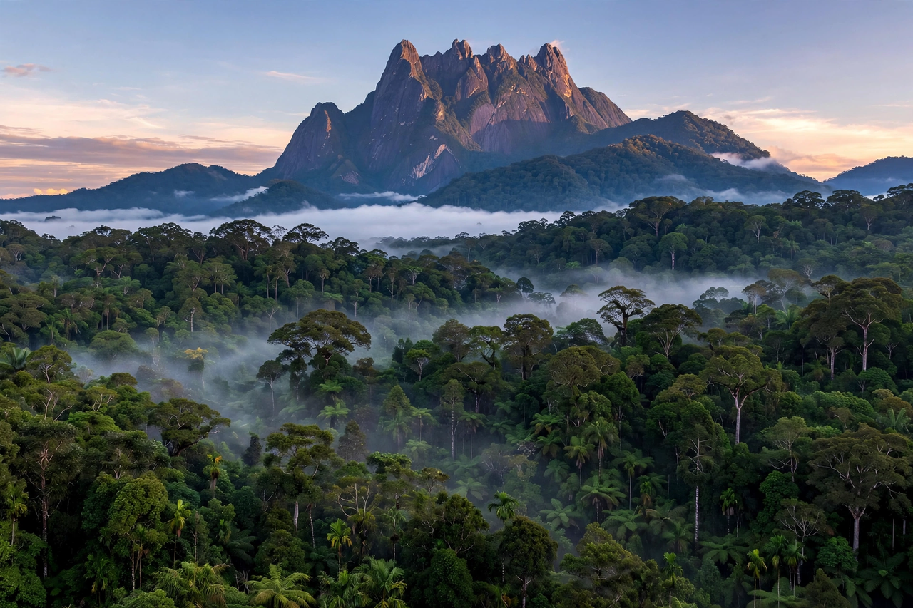

Borneo
Borneo is the third-largest island in the world and the largest in Asia, with an area of about 748,168 km². Situated at the geographic centre of Maritime Southeast Asia, north of Java, west of Sulawesi and east of Sumatra, the island is politically divided among three countries: Malaysia and Brunei in the north, and Indonesia to the south. The Indonesian region, comprising about 73% of the island, is known as Kalimantan. Malaysia's states of Sarawak and Sabah occupy the northwest and north, with the tiny, oil-rich sultanate of Brunei between them on the north coast.
 | |
| Area | 748,168 km² (3rd largest island) |
|---|---|
| Highest point | Mount Kinabalu, 4,095 m |
| Population | ~23 million (2020s) |
| Countries | Indonesia, Malaysia, Brunei |
| Largest cities | Kuching, Balikpapan, Banjarmasin, Kota Kinabalu, Samarinda |
Geography and ecology
The island's interior is mountainous, crowned by Mount Kinabalu in Sabah, the highest peak between the Himalayas and New Guinea. Great rivers — the Kapuas (the longest in Indonesia), Barito, Mahakam and Rajang — drain a vast equatorial rainforest that sits largely on infertile, leached soils and extensive peat swamp forests. Borneo is one of the world's great centres of biodiversity: its rainforests, among the oldest on Earth (around 130–140 million years), are home to the Bornean orangutan, proboscis monkey, pygmy elephant, clouded leopard, hornbills, and the giant parasitic flower Rafflesia arnoldii. Thousands of endemic species occur, and new species continue to be described — the WWF's "Heart of Borneo" initiative counted hundreds of discoveries in the 2000s–2010s.
History
Humans have inhabited Borneo for at least 40,000 years (the Niah Caves in Sarawak). Hinduised kingdoms such as Kutai (4th–5th century, with the earliest Sanskrit inscriptions in Southeast Asia) traded with India and China; by the 16th century Islam had spread along the coasts, and the Sultanate of Brunei dominated the northern littoral. The 19th century saw the White Rajahs of the Brooke family ruling Sarawak, the British North Borneo Company administering Sabah, and the Dutch consolidating the south. Japan occupied the island in 1941–45. After the war, Sarawak and Sabah joined Malaysia (1963) — sparking Indonesia's Konfrontasi — while Brunei remained a British protectorate until independence in 1984.
Economy and environment
Borneo's economy rests on oil and gas (Brunei and offshore fields), coal, timber, rubber and, above all, palm oil plantations. Indonesia's Kalimantan has also been chosen as the site of the new purpose-built capital, Nusantara, intended to relieve Jakarta. Deforestation — Borneo has lost a large share of its forest cover since the 1970s — and recurrent peat fires and haze are major environmental concerns, threatening endemic wildlife and releasing vast stores of carbon.
See also
Categories: Borneo · Islands of Southeast Asia · Maritime Southeast Asia